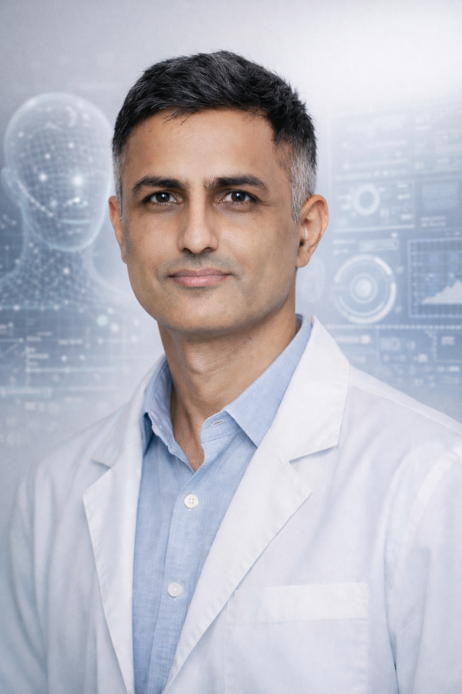

DeepDynamics Lab · IIIT Surat
Machine intelligence through dynamics, geometry, and memory.
We study principled ways to build adaptive intelligent systems by combining dynamical systems, geometric structure, recurrent computation, and structured memory.
Led by Dr. Pradeep Singh, Indian Institute of Information Technology Surat.

Research
Our work asks how dynamics and structure can become first-class computational primitives rather than afterthoughts.
- 01
Dynamics of Intelligence
Recurrent computation, reservoir systems, temporal dynamics, structured memory, and emergent representations.
- 02
Geometry & Structure in Learning
Hyperbolic representations, topology, equivariance, symmetry, and geometric inductive biases for generalisation.
- 03
Agentic & Adaptive Systems
Memory, interaction, reasoning, and dynamical mechanisms for autonomous and continually adapting systems.
Selected work
- 2026
What Reservoirs Can Say? Sofic Languages and Finite-Type Views of Echo State Dynamics
- 2026
Holonomy Grid Codes for Generalisation Under Directed Actions
- 2026